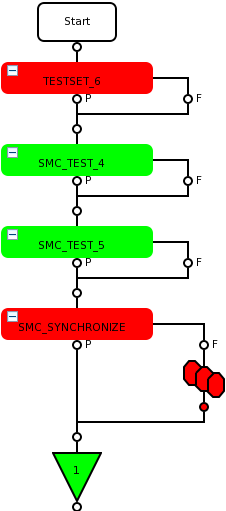
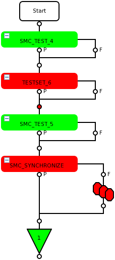
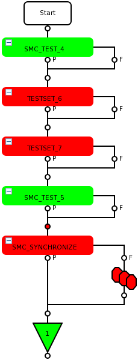
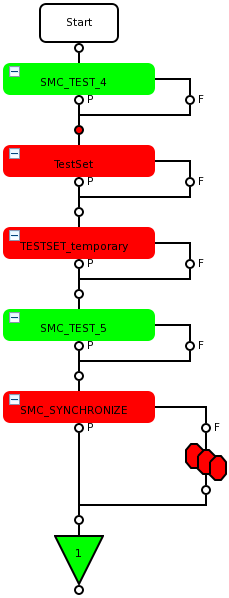

Use of TESTSET and SMC_TEST() test suites with multibin
The topic describes the binning rule and the main use cases using test suites with
TESTSET and test suites with SMC_TEST()
and its influence on the multibin.
If you use TESTSET within the SMC framework instead of SMC_TEST, binning happens in SMC_SYCHRONIZE according to the binning rules as for SMC_TEST. For details, see Use of SMC_TEST() with multibin.
If you use, within a testflow, the SMC framework and TESTSET test suites independent of each other, binning happens according to the binning rules explained in the examples below.
In general, the first failing test defines the logged multibin. But for
SMC_TEST() calls the test suite with the SMC_SYNCHRONIIZE() call defines the point of time in the testflow when
SMC_TEST() tests are validated. In this respect, the
SMC_TEST() calls do not influence the binning rule, but the test
suite with the SMC_SYNCHRONIZE does.
Examples
Example 1: Failing non-SMC test followed by failing SMC test
|
 |
In a testflow a test of the non-SMC test suite
The failing test of non-SMC test suite |
Example 2: Failing SMC test followed by failing non-SMC test
|
 |
In a testflow a test of the non-SMC test suite
|
Example 3: Failing SMC test followed by multiple failing non-SMC test using temporary TESTSET() objects
|
 |
In a testflow a test of both the non-SMC test suites
Additional to the rule explained above, the rule for multiple test suites with temporary TESTSET objects applies (see Multiple usage of the temporary object in Use of TESTSET with multibin). The failing test of
|
Example 4: System prepared TestSet object in combination with temporary TESTSET object
|
 |
In a testflow all tests of the test suite
Additional to the rule explained above, the rule for multiple test suites using temporary TESTSET() objects applies (see Multiple test suites section in Use of TESTSET with multibin). The failing test of
|
Functional changes
- Introduced in SmarTest 7.1.4